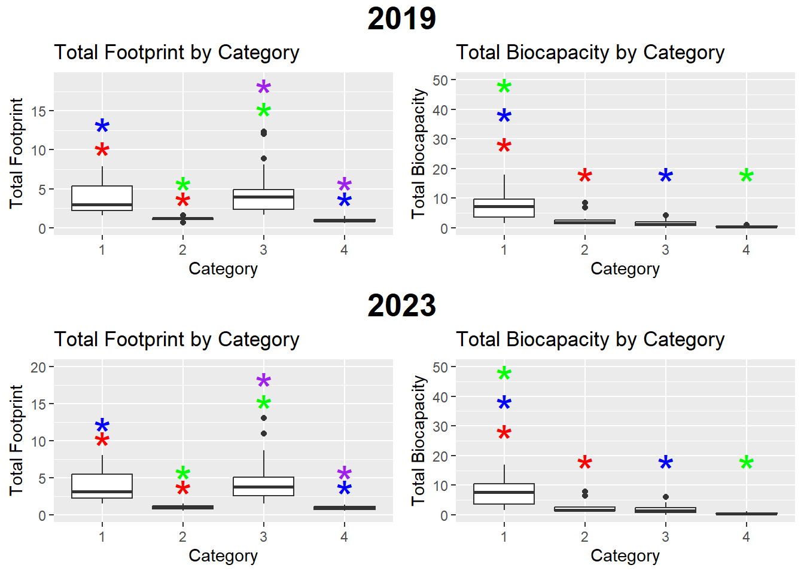
Cropland Footprints and Capacities have the Most Impact of All Industrial Footprints and Capacities on Sustainability
Abstract
Sustainability worldwide has decreased for the last five decades, as resource usage outpaces availability. To help set goals to decrease waste and increase the efficiency in the way we use resources, this project aims to 1) find the industrial footprints and resource capacities that are the most different between sustainable and unsustainable countries in both 2019 and 2023, and 2) see how changes to those industries’ footprints & resource capacity between those years correlate with a country’s sustainable & economic growth. This will be done to see which industries should be at the forefront of a worldwide sustainability campaign, making sure those industrial changes won’t have negative economic consequences.
To define sustainable and unsustainable countries for the first part of the project, I decided to group them by their num_countries_required and num_earths_required measurements (A more detailed look into what the variables of the dataset mean can be found here: https://www.kaggle.com/datasets/jainaru/global-ecological-footprint-2023/data). I chose these two measurements because they provide the most nuanced look into a country’s sustainability status. For example, a country could have a num_earths_required less than 1, which would imply that they are sustainable, but at the same time, they could have a num_countries_required greater than 1, which would imply they are unsustainable. This led me to the categories created below:
Category 1 -> num_countries_required <= 1 and num_earths_required > 1
Category 2 -> num_countries_required <= 1 and num_earths_required <= 1
Category 3 -> num_countries_required > 1 and num_earths_required > 1
Category 4 -> num_countries_required > 1 and num_earths_required <= 1
Solely based on the definitions of num_countries_required and num_earths_required, we can safely infer that Category 1 countries have a high total footprint that is offset by high total capacity/resource available, leading them to have a num_countries_required < 1. Category 4 countries have a low total footprint but are still affected by low total resource capacity which leads to them having a num_countries_required > 1. We also know that Category 3 has a higher footprint than Category 2, but both have similar total capacity. Therefore, we can see that despite the nuance behind defining sustainability, Categories 1 and 3 have higher footprints than Categories 2 and 4, leading me to classify Categories 1 and 3 as unsustainable and Categories 2 and 4 as sustainable. Yet, the 4 separate categories are still going to be kept in the research process to provide a more nuanced look when doing comparisons of industrial measurements. These industrial measurements include the footprints (measurement of how much is used) and capacity (measurement of how much is available to use) for cropland, grazing, forest, built-up land, fish, and carbon activities. ANOVA tests will be used to find significant differences in these measurements between categories.
For the second part of the project, I decided to reuse the num_countries_required and num_earth_required variables to measure sustainable growth, as well as GDP Per Capita to measure economic growth. I used the data from 2019 and 2023 and calculated percent growth as a measurement for change. After doing the same for the industrial measurements (cropland, grazing, etc) as a way to measure industrial footprint and capacity growth, a Pearson’s Correlation test is used to find relationships between the industrial growth measurement, and the sustainable/economic growth measurements.
For the first part of the project, I found that cropland, grazing, and forest industries accounted for the top 3 most significant differences in terms of footprint and capacity between sustainable (Category 2 and 4) and unsustainable (Category 1 and 3) countries. For the second part of the project, I found that growth in GDP Per Capita did not have definitive correlations with the growth of an industrial sector. Growth in sustainability, however, did have conclusive correlations with growth in cropland footprint/capacity. As such, we can conclude that the cropland industry provides itself as an important focus for future sustainability efforts. However, we can also see that changes to any of these industries won’t necessarily benefit a country’s economy, which could discourage countries from engaging in sustainable development in their industrial sectors. Further research is needed to find methods that bring both sustainability improvements and economic growth.
Background
For the past 50 years, Earth Overshoot Day, the date in the year that the world’s ecological footprint and consumption exceeds Earth’s resource capacity, has been consistently occurring earlier in the year. Human ecological footprint and consumption have been outpacing the Earth’s capacity to sustain this activity, driving climate change, destroying wildlife environments and worldwide biodiversity, and leading to exhaustion of the necessary resources and economic instability. As such, an emphasis needs to be placed on limiting the waste and inefficiency of economic and industrial activities. To accomplish this, however, it is necessary to study which man-made activities truly have the biggest impacts on sustainability, therefore allowing more concentrated efforts to cut down on unsustainable practices. This project highlights how different ecological footprints and resource availability change differently between sustainable and unsustainable countries in both 2019 and 2023. Furthermore, it explores how changes in a country’s ecological footprints and resource capacity correlate with a country’s growth in sustainability and economy by looking at changes between 2019 and 2023.
Results
Differences in Ecological Measurements between Categories of Sustainability
These comparisons are made to see if there are any significant differences in the ecological measurements (total footprint and total capacity) of categories that have the same sustainable status. Therefore we plan on seeing if there is any significant difference between Categories 1 and 3 (both defined as unsustainable) and between Categories 2 and 4 (both defined as sustainable). Generally, however, we expect to not find any significant differences between Categories 1 and 3, and between Categories 2 and 4.
In 2019 and 2023, the results were the same - the categories that had significant differences in 2019 had the same difference in 2023. In both years, Category 1 had a significantly higher total biocapacity than all other categories (even Category 3), which corroborates the fact that despite their unsustainability on a worldwide level, they are sustainable on a country level. Furthermore, Category 3 had a significantly higher total footprint than Category 4, which supports the idea that unsuitability in Category 4 is mostly due to a lack of resources, not overconsumption.
Different Footprints and Resource Availability between Categories of Sustainability
To get a clearer and more detailed picture of the differences in footprints and capacity of the countries, it’s necessary to start looking at the footprint and capacities of individual industries. We aim to find the industries that hold the most significant differences between sustainable (Category 2 and 4) and unsustainable (Category 1 and 3) countries.
Crop Footprints and Capacity
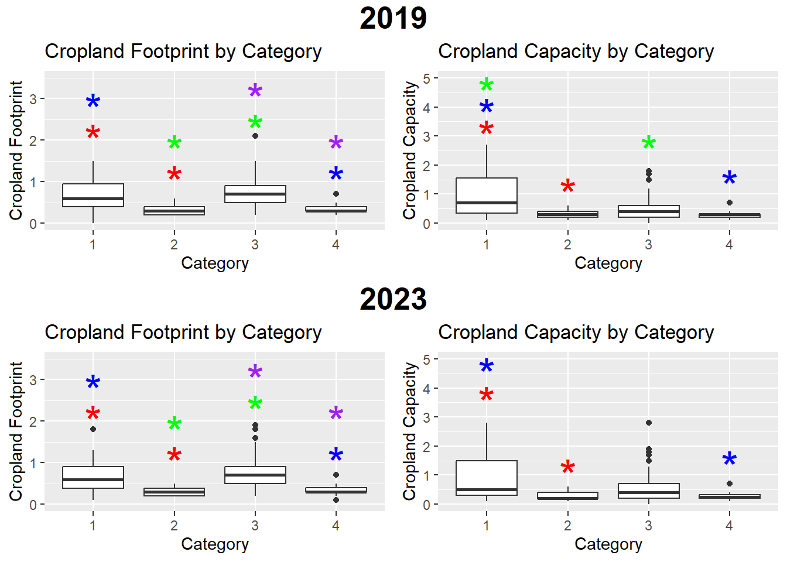
In both years, Categories 1 had a higher cropland footprint and cropland capacity than Categories 2 and 4. On the other hand, Category 3 only had a higher cropland footprint than Category 2 and 3 in both years. There is no significant difference in the cropland footprint between Categories 1 and 3 despite Category 1 having a higher cropland capacity than Category 3.
Grazing Footprints and Capacity
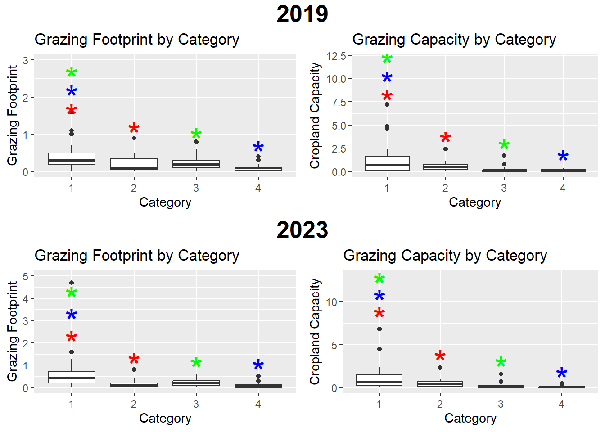
In both years, Category 1 had a higher grazing footprint and grazing capacity than all other categories.
Forest Footprints and Capacity
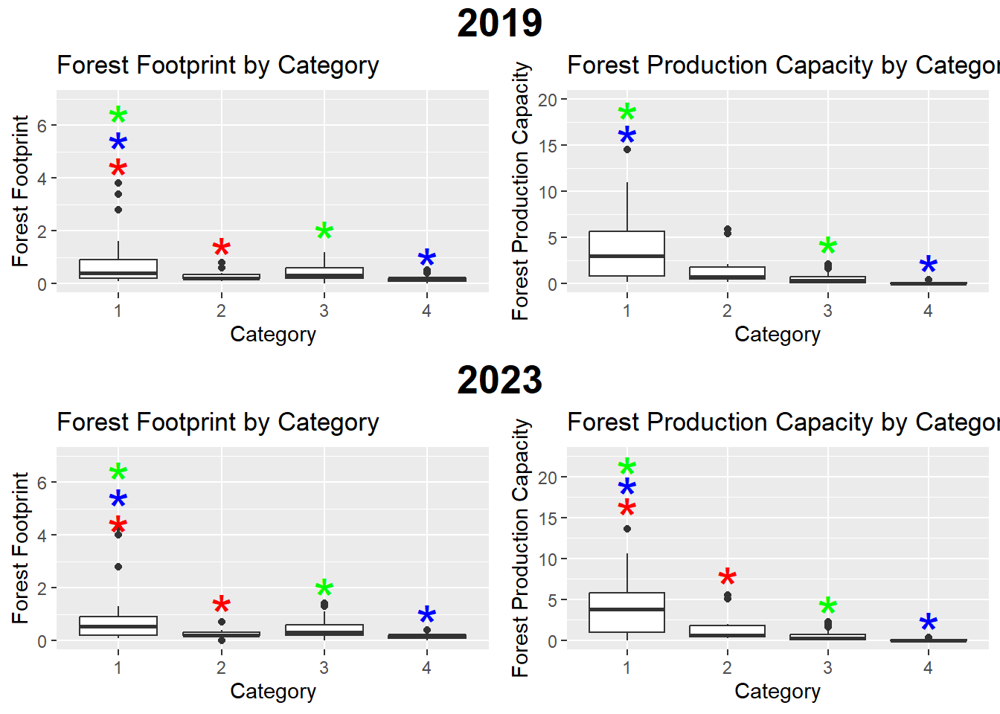
In both years, Category 1 had a significantly higher forest footprint and forest capacity than all categories, with the exception of Category 3’s forest production capacity in 2019.
Fish Footprints and Capacity
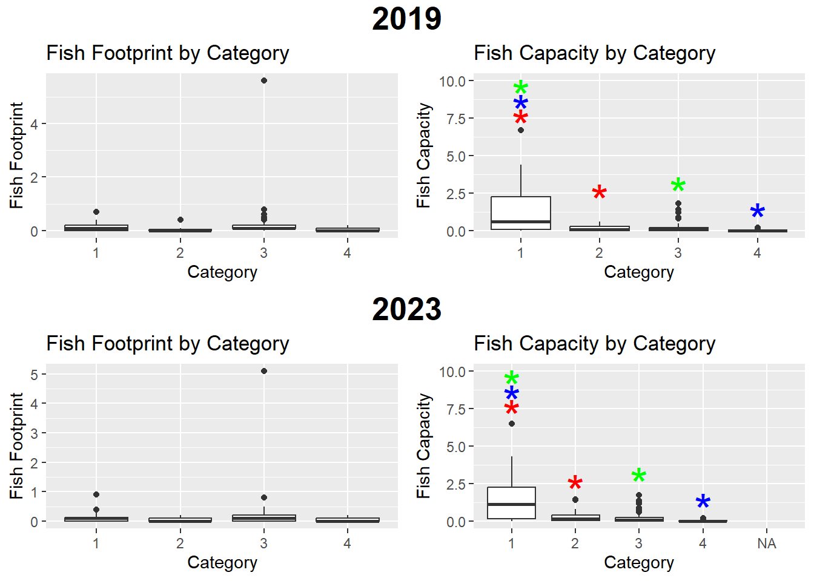
In both years, there are no significant difference in the fish footprint in any of the categories. Category 1, however, had a significantly higher fish capacity than all other categories.
Built up Land Footprints and Capacity
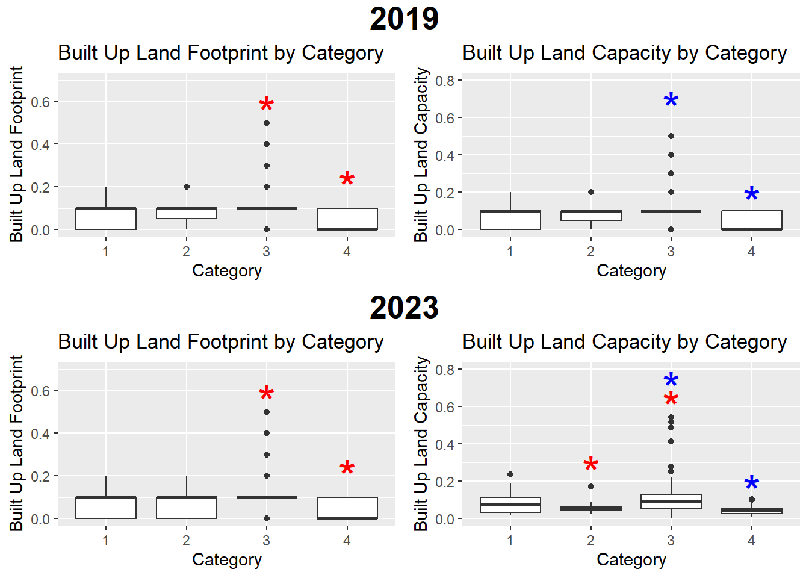
Category 3 and 4 had significant differences in both land footprint and land capacity in both years.
Carbon Footprints and Capacity
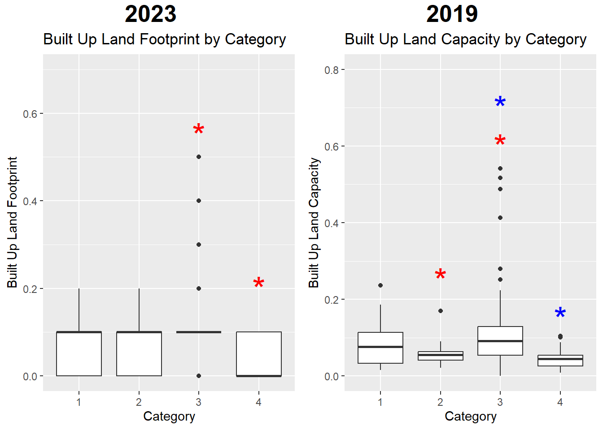
Category 3 and 4 had significant differences in carbon footprint in both years.
Conclusion
With the data from both 2019 and 2023, cropland, grazing, and forest industries accounted for the top 3 most significant differences in terms of footprint and capacity between sustainable (Category 2 and 4) and unsustainable (Category 1 and 3) countries.
Correlations Between Changes in Footprints/Capacities and Growth in Economy/Sustainability
Instead of looking at the two years in isolation, it’s important to see how changes in an industry’s footprint and capacity impact a country’s economy and its sustainability. This will provide evidence that targeting the industries that were found to be significant will bring about the change necessary to protect the environment. This will require us to look at the data as a whole, and not focus solely on the categories that were made to define sustainable and unsustainable countries.
Per Capita GDP is used to measure economic growth, and both num_earths_required and num_countries_required are used to measure sustainability growth.
Correlations w/ Economic Growth
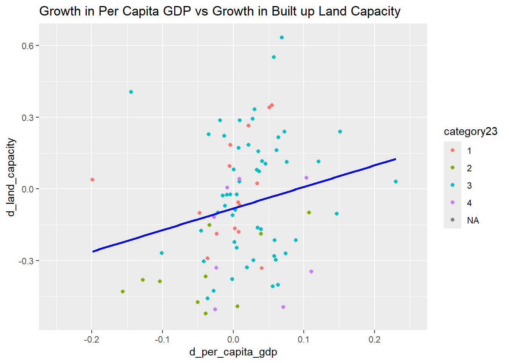
Growth in built up land capacity was the only category that had any correlation with growth in Per Capita GDP.
Correlations w/ Sustainability Growth
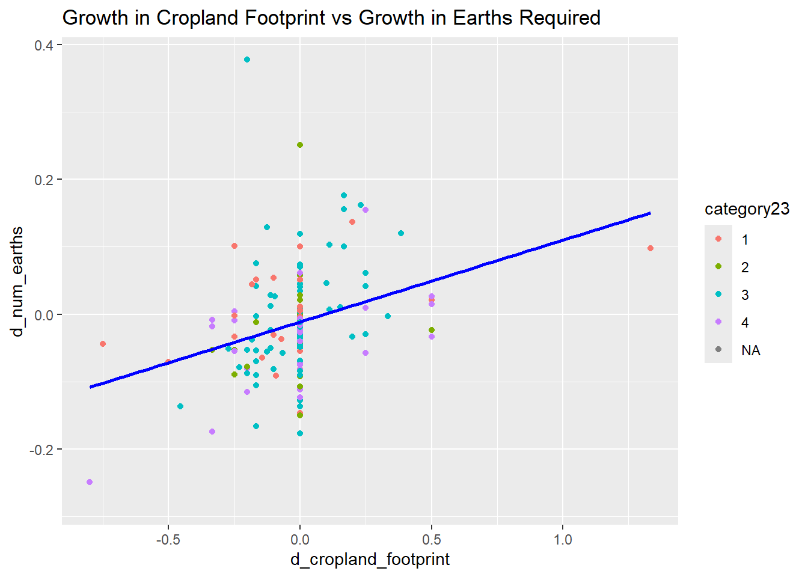
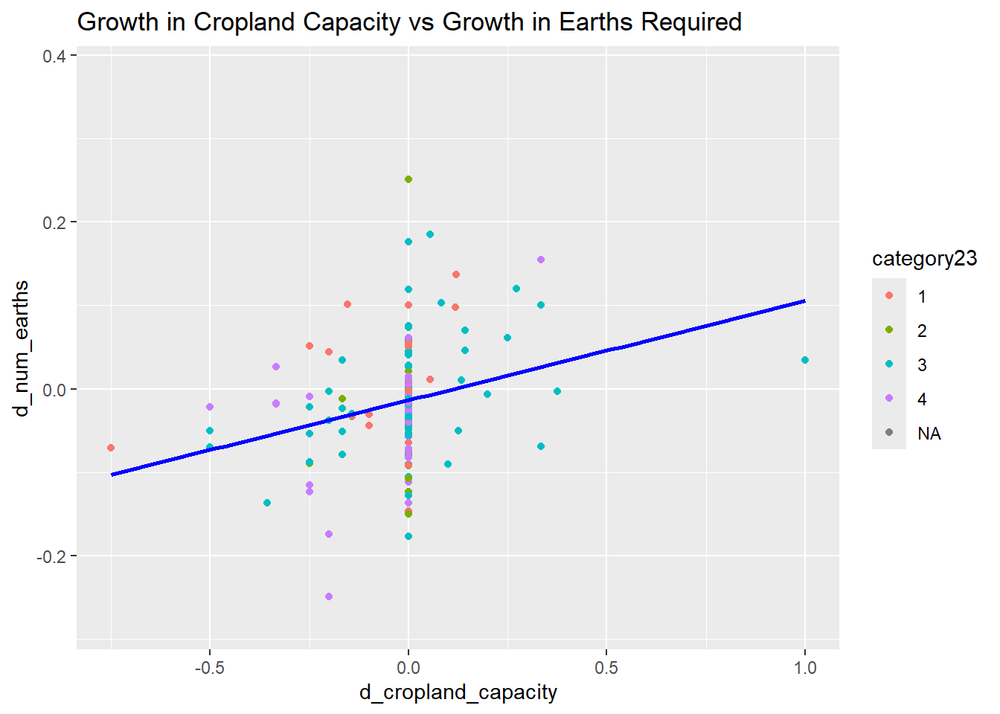
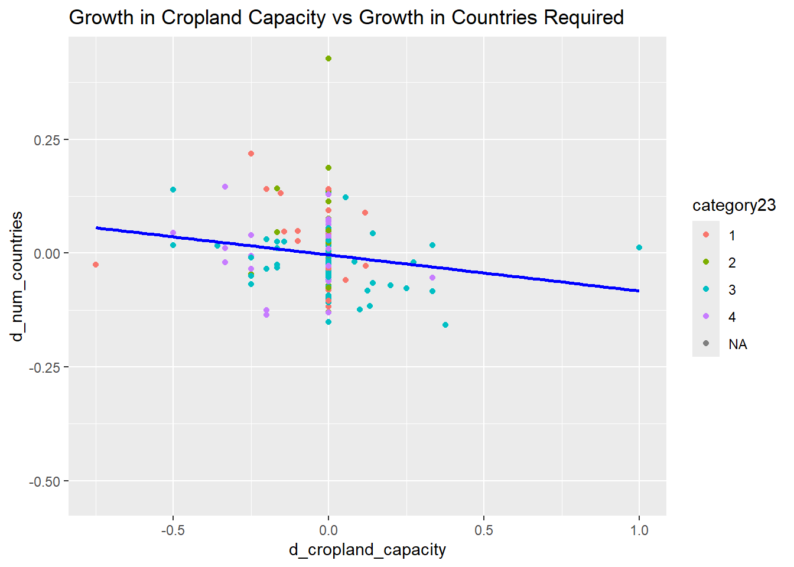
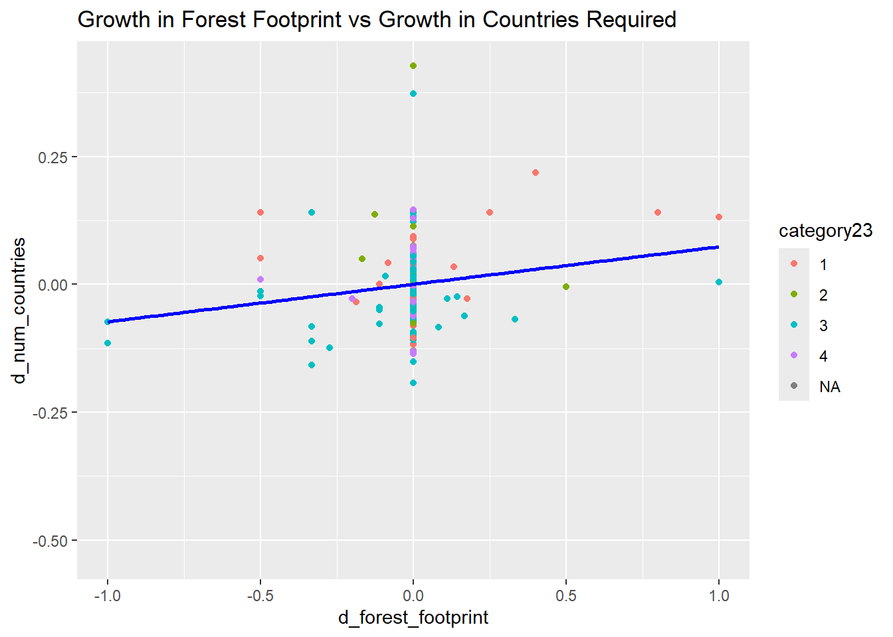
Cropland footprint/capacity had the most correlations with growth in sustainability. The only other correlation was growth in forest footprint and growth in num_countries_required.
Conclusion
Growth in GDP Per Capita did not have conclusive/definitive correlations with growth in an entire industrial sector. Growth in sustainability did have conclusive correlations with growth in cropland footprint/capacity.
Discussion
In 2019 and 2023, cropland footprint and capacity were some of the most significant differences between sustainable and unsustainable countries. Growth/decline in cropland activities also held the most significant correlation with growth in sustainability. As such, the cropland industry will be an important focus for future sustainability efforts. However, we can see that changes within the cropland industry did not have any correlation with growth in a country’s economy. As such, many governments worldwide might be hesitant to pursue such changes as they might require significant investment without major economic benefit. Yet, it is still crucial that goals to make such industries more sustainable are made to preserve the future of this planet. A good way of approaching this and making sure governments are willing to support these goals is to conduct further research to find methods that bring both sustainability improvements and economic growth. Further research could also be conducted to find if there are regional differences in the significance of a specific industry.
References
Past Earth Overshoot Days (n.d.). Earth Overshoot Day. https://overshoot.footprintnetwork.org/newsroom/past-earth-overshoot-days/
Code and Data Availability
Code is available here: https://github.com/the-codingschool/DSRP-2024-George/tree/dev-Stephen
Acknowledgements
I want to thank the Coding School for allowing me to learn and practice data science. I would also like to thank my mentor George Zhou and my TA Shruti for aiding with my research and coding experience.